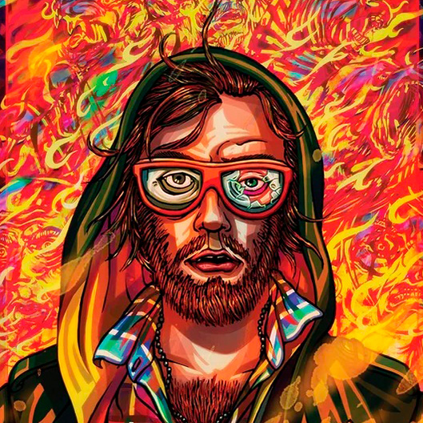

Aquí podrás encontrar artículos de opinión redactados por nuestros redactores oficiales de SqrWave y de otros redactores
independientes a los que acojemos en nuestra plataforma para que todo el mundo tenga una voz. Os invitamos a que nos
envieis vuestros articulos sobre cualquier tema relacionado con la música que queraís ver publicado en la web. Para mas
información contactar por email a SqrWaveWeb@gmail.com.
Daft Punk 3 años después
El Huervo, el polifacético